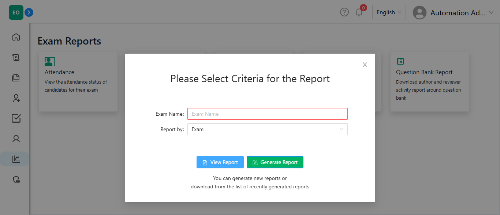

-
IBT exam flow
8:13:58 pm / 00:00:46:250 Fail
IBT exam flow
03.06.2025 8:13:58 pm 03.06.2025 8:14:45 pm 00:00:46:250 · #test-id=1FailCandidate logs in and start attempting an IBT examGiven the Admin logs in to the admin portalAnd the candidate taking credentials from the attendance sheetStepsDefinations.Hooks.addScreenshot(io.cucumber.java.Scenario)Candidate logs in and start attempting an IBT examAnd the candidate navigates to the candidate login page and logged inStep skippedThen verify the candidate is able to see the dashboardStep skippedWhen the candidate clicks the start button for the IBT examStep skippedThen verify if the candidate should see the instruction page and other detailsStep skippedAnd verify if the candidate see Remaining Exam Time and exam nameStep skippedAnd verify MCSA Question and select optionStep skippedAnd verify MCMA Question and select optionStep skippedAnd verify TF Question and select optionStep skippedAnd verify Essay Question and give answerStep skippedAnd verify SA Question and give answerStep skippedAnd verify FU QuestionStep skippedAnd verify Likert QuestionStep skippedAnd verify Numeric Value QuestionStep skippedAnd verify Exam submissionStep skippedFailVerify candidate relogin scenarioStepsDefinations.Hooks.setup()Given the Admin logs in to the admin portalStep skippedAnd the candidate taking credentials from the attendance sheetStep skippedAnd the candidate navigates to the candidate login page and logged inStep skippedThen verify the candidate is able to see the dashboardStep skippedWhen the candidate clicks the start button for the IBT examStep skippedThen verify if the candidate should see the instruction page and other detailsStep skippedAnd verify if the candidate see Remaining Exam Time and exam nameStep skippedAnd verify MCSA Question and select optionStep skippedAnd verify MCMA Question and select optionStep skippedAnd candidate closing exam windowStep skippedAnd candidate relogin to examStep skippedAnd verify if the candidate should see the instruction page and other detailsStep skippedAnd verify if the candidate see Remaining Exam Time and exam nameStep skippedAnd verify if candidate clicking next buttonStep skippedAnd verify TF Question and select optionStep skippedAnd verify Essay Question and give answerStep skippedAnd verify SA Question and give answerStep skippedAnd verify FU QuestionStep skippedAnd verify Likert QuestionStep skippedAnd verify Numeric Value QuestionStep skippedAnd verify Exam submissionStep skipped
-
org.openqa.selenium.SessionNotCreatedException
1 tests
org.openqa.selenium.SessionNotCreatedException
1 failedStatus Timestamp TestName Fail 20:14:39 pm StepsDefinations.Hooks.setup() IBT exam flow.Verify candidate relogin scenario.StepsDefinations.Hooks.setup() -
org.openqa.selenium.NoSuchElementException
1 tests
org.openqa.selenium.NoSuchElementException
1 failedStatus Timestamp TestName Fail 20:14:11 pm And the candidate taking credentials from the attendance sheet IBT exam flow.Candidate logs in and start attempting an IBT exam.And the candidate taking credentials from the attendance sheet
-
@Regression
2 tests
@Regression
2 failedStatus Timestamp TestName Fail 20:13:58 pm Candidate logs in and start attempting an IBT exam IBT exam flow.Candidate logs in and start attempting an IBT examFail 20:14:39 pm Verify candidate relogin scenario IBT exam flow.Verify candidate relogin scenario
Started
Mar 6, 2025 08:13:57 pm
Ended
Mar 6, 2025 08:14:45 pm
Features Passed
0
Features Failed
1
Features
Scenarios
Steps
Timeline
Tags
| Name | Passed | Failed | Skipped | Others | Passed % |
|---|---|---|---|---|---|
| @Regression | 0 | 2 | 0 | 0 | 0% |